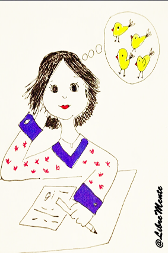

Hola, soy Romi Musali
Nuevas oportunidades me ponen a pensar en un proyecto personal que me desafía a recrear mi profesión, fusionando con lo que podría decirse "me da placer". Hay dos cosas que en mis 34 años me doy cuenta que me dan mucho placer, si de cuestiones laborales y o personales se trata: resolver "problemas" vinculados al acceso a Derechos; y por otro lado, poder acompañar en instancias de aprendizajes (mal llamado a veces "transmitir conocimiento").

Proyectos
-
Gestoría Profesional
-
Algo más que aprender